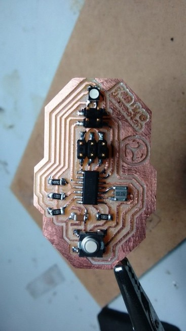

Input Devices
This week's assignment is to >> measure something: add a sensor to a microcontroller board that you have designed and read it. I have used the fabI/O board I have designed and made during the output week and connected a Ultrasound sensor HC04.
Design and Make of the board
On the fabi/o board I have created during the output week, I have purposefully put given some spare pins, that I could use for this week. The schematics and the PCB are made using EAGLE and the board was milled using the modella in our lab.



Ultrasonic Sensor
I have used a ultrasonic sensor module HC04 which is availabe for ~300INR on amazon.
The HC-SR04 Ultrasonic Module has 4 pins, Ground, VCC, Trig and Echo. The Ground and the VCC pins of the module needs to be connected to the Ground and the 5 volts supply respectively and the trig and echo pins to any Digital I/O pin on the microprocessor.
It emits an ultrasound at 40,000 Hz which will bounce back to the module if there is an object or obstacle on its path. Distance could then be calculated by considering the travel time and the speed of the sound.
Programming
I have used the Arduino IDE for coding the board. Initially I tried coding an Arduino UNO to which the HC04 is connected. This code could be found here. I have mainly used this as my first try in testing the HC04 sensor module.
I then modified the code to include a LED connected to PIN13, and the coded such a way that the LED turns ON when the distance is more than 25cm. This code could be found here. I have used this to check the functionality before programming the board that I have made.
Finally, I programmed the Attiny44 using the Arduino IDE. My board had a RGB LED, and two spare pins. I connected the HC04 and this time did the programming to turn ON the RGB LED when the disance is less than 25cm. This code could be found here. This way the sensor could also act as a proximity sensor.
Conclusion
This week, I have used the Ultrasound sensor, and learned to connect and program it. I was thus able to make a proximity sensor that couldbe applied to my project also.
The EAGLE files for this week's assignment is available via the link below.
And the codes for this week's assignment is available via the link below.